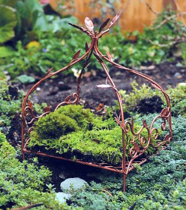
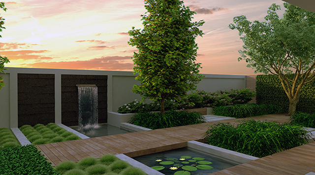
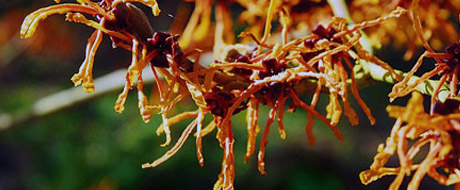

Images
  uw tuin, onze zorgen!
Tuin aanleggen of heeft uw tuin onderhoud nodig? Voor al je tuinproblemen moet je bij Nico Van Knosselaar zijn. We behandelen uw tuin zoals het de onze zou zijn.
Tuin aanleggen of heeft uw tuin onderhoud nodig? Voor al je tuinproblemen moet je bij Nico Van Knosselaar zijn. We behandelen uw tuin zoals het de onze zou zijn.